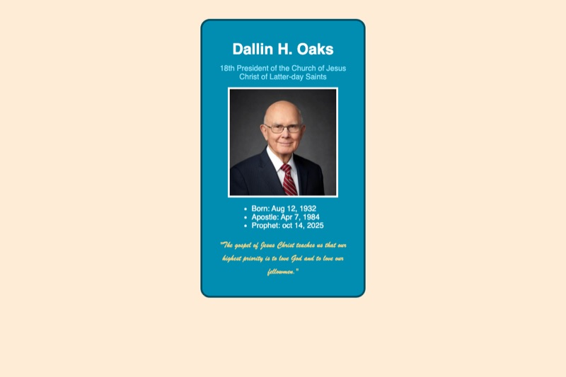
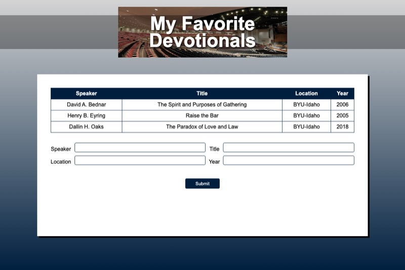
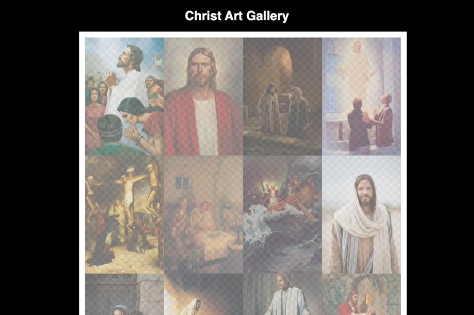
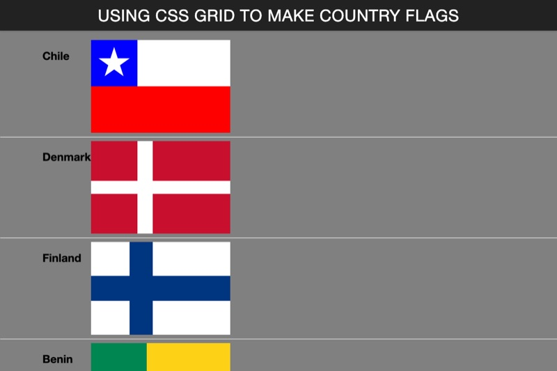
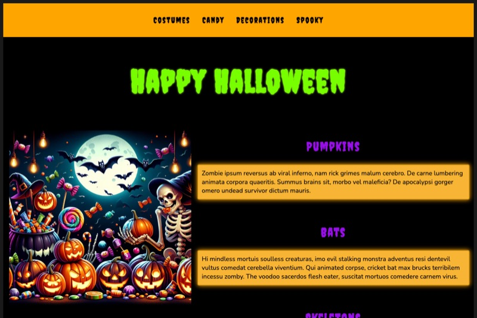
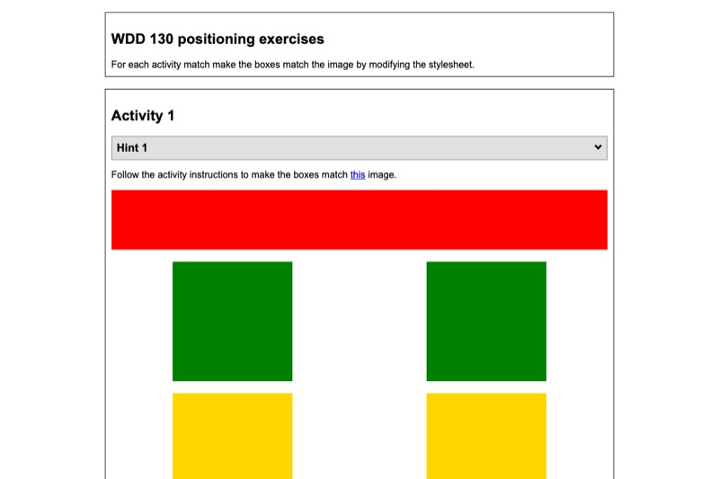
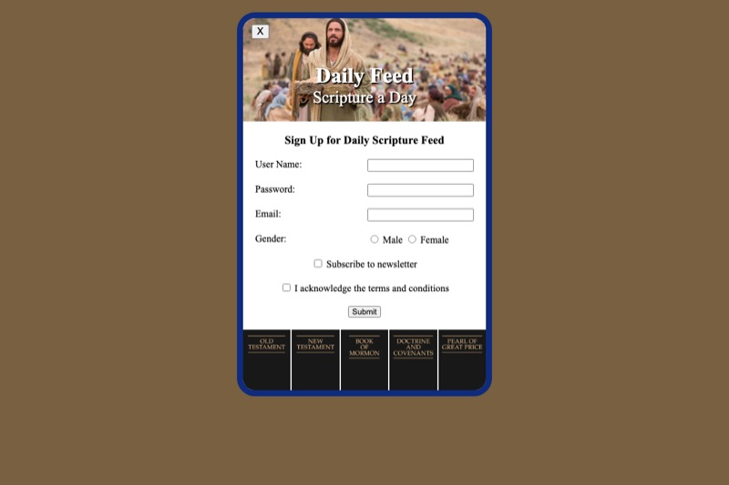

ICE stands for in-class exercises. These are the small pages I build during class to practice one new skill at a time, such as a prophet card, a favorite devotional page and a Halloween page. Together they show how my HTML and CSS skills have grown week by week.

Prophet Card
A profile card for President Dallin H. Oaks with his photo, a list of key dates and a quote.
What I learned: I practiced building a card with a list, an image and a quote, and styling it with colors, borders, rounded corners and custom fonts.
View Prophet Card →

Favorite Devotionals
A page about my favorite devotionals that has a table of talks and a form to add a new one.
What I learned: I learned how to build a table with its helper elements and a form with labels, text and number inputs, and a styled button.
View Favorite Devotionals →

Gallery
A gallery of images of Christ shown in a grid of thumbnails that link to the full-size pictures.
What I learned: I learned to use small and big versions of an image, link each thumbnail to its large version and lay them out with CSS Grid and hover effects.
View Gallery →

Grid Flags
Country flags drawn using only CSS Grid, without any images.
What I learned: I practiced grid-template-columns, grid-template-rows and spanning areas to build different layouts, and saw how powerful Grid is.
View Grid Flags →

Halloween
A themed Halloween page with a navigation menu, a heading and an image.
What I learned: I practiced combining flexbox and grid for layout and using :hover to make a page react when the mouse passes over it.
View Halloween →

Positioning
An activity with hints that appear using CSS positioning.
What I learned: I learned the difference between relative and absolute positioning and how to place one element on top of another.
View Positioning →

Sign Up
A sign-up form for a daily feed with several kinds of inputs.
What I learned: I learned to use text, password, email, radio and checkbox inputs, plus labels and the required attribute for validation.
View Sign Up →